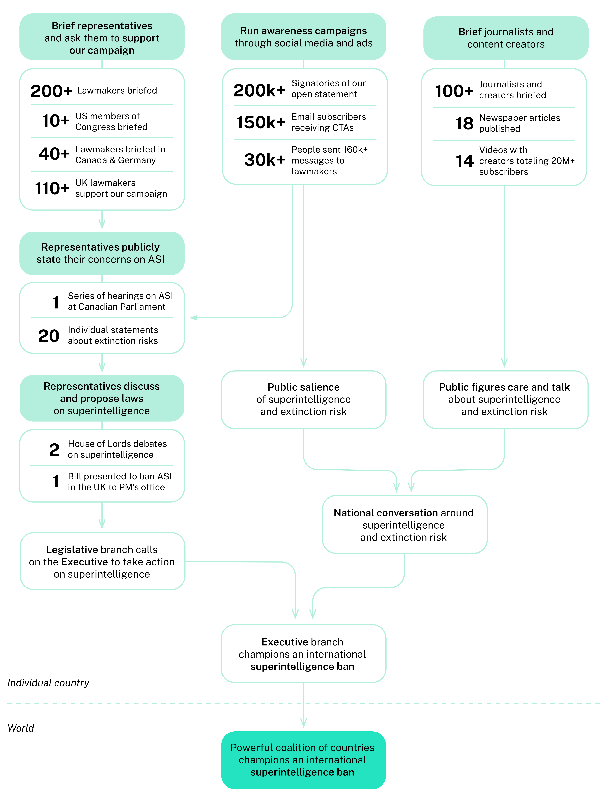

Advocacy
Eventually this page should break down different types of advocacy and try to evaluate the impact they have. For example: directly targeting lawmakers, targeting the general public, holding protests, making open statements and collecting signatures for them, the especially strong voices that frontier AI labs and their employees have, news media, etc.
From ControlAI’s 2025 Impact Report:

Top external resources
- ControlAI’s 2025 Impact Report
- “What We Learned from Briefing 70+ Lawmakers on the Threat from AI” and “What We Learned from Briefing 140+ Lawmakers on the Threat from AI”
- An Activist View of AI Governance
- Existential AI safety needs an effective social movement. PauseAI is building it
- 80,000 Hours’ career advice for AI safety advocacy
Parent pages: Main page